#1ĐÈ CHỮCAO
Chữ bị cắt/đè/lòi khung: "Quầy trái cây Dinh Cậu" ra ngoài mép màn hình
Màn: ban do · dọc · ×4 màn
Bản sau 24l (v4.19) · iPhone 390×844 dọc + 844×390 ngang · ảnh chụp DPR 3 · KHÔNG sửa code game · 71 lỗi (đã gộp trùng) · bấm ảnh để xem cả màn
Chữ bị cắt/đè/lòi khung: "Quầy trái cây Dinh Cậu" ra ngoài mép màn hình
Màn: ban do · dọc · ×4 màn
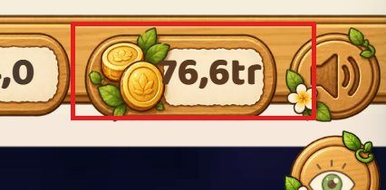
Ô tiền trên thanh trên: icon đồng xu đè mất chữ số đầu ("76,6tr" thành ")6,6tr"; "81,1tr" mất số 8). Gặp ở mọi màn.
Màn: ve tiem · dọc
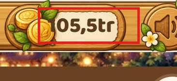
Ngang: ô tiền vẫn bị xu đè, "105,5tr" hiện "05,5tr".
Màn: mua do · ngang
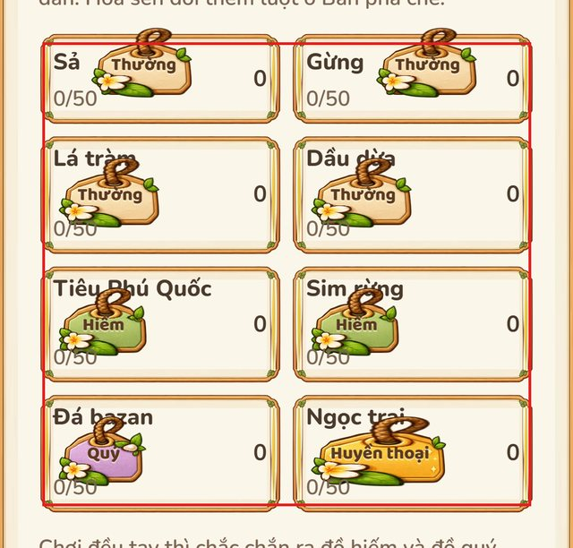
Kho nguyên liệu: huy hiệu độ hiếm (Thường/Hiếm/Quý) đè lên tên nguyên liệu và số "0/50" ("Lá tràm", "Dầu dừa", "Tiêu Phú Quốc" bị che).
Màn: inv 1 choi · dọc
Ảnh bị phóng quá mức nên nhòe trên iPhone (DPR 3): bg out/mg25-dichvu.webp gốc 1400x788 cần ≥ 3995x2249 (phóng 2.85x)
Màn: tab dv · dọc · ×4 màn
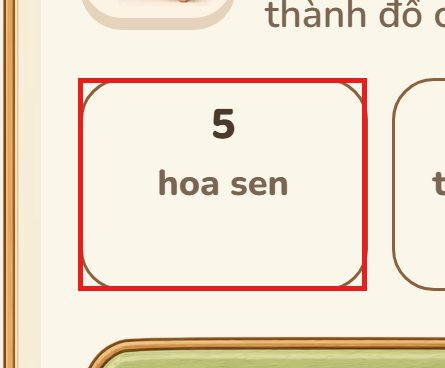
Khung/nút chỉ là màu phẳng + viền CSS, chưa vẽ tay: nền rgb(251, 246, 234) 96x70, viền 1px solid, bo góc 14px "5hoa sen"
Màn: inv 0 mo · dọc + ngang · ×48 màn
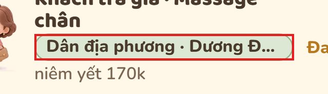
Khung/nút chỉ là màu phẳng + viền CSS, chưa vẽ tay: nền rgb(220, 232, 212) 196x20, viền 1px solid, bo góc 999px "Dân địa phương · D"
Màn: m126 · dọc + ngang · ×42 màn
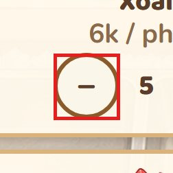
Khung/nút chỉ là màu phẳng + viền CSS, chưa vẽ tay: nền rgb(251, 246, 234) 32x32, viền 2px solid, bo góc 50% "−"
Màn: qua 2 Bat da · dọc · ×32 màn
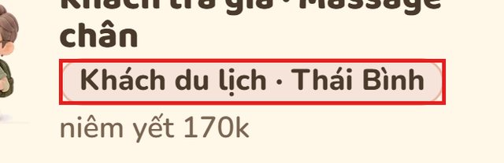
Khung/nút chỉ là màu phẳng + viền CSS, chưa vẽ tay: nền rgb(246, 227, 218) 170x20, viền 1px solid, bo góc 999px "Khách du lịch · Th"
Màn: vt · dọc + ngang · ×5 màn

Chữ bị cắt/đè/lòi khung: hoa văn trang trí ::before (div#wm) đè/chạm chữ "Quầy trái cây Dinh Cậu"
Màn: ban do · dọc · ×9 màn
Chữ bị cắt/đè/lòi khung: "Quầy trái cây Dinh Cậu" lòi ra ngoài khung cha 24px
Màn: ban do · dọc · ×4 màn
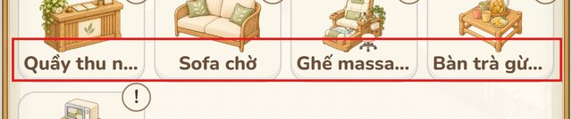
Kho đồ: tên món bị cắt thành "Quầy thu n…", "Ghế massa…", "Bàn trà gừ…" nên người chơi không phân biệt được các ghế.
Màn: bay tri · dọc
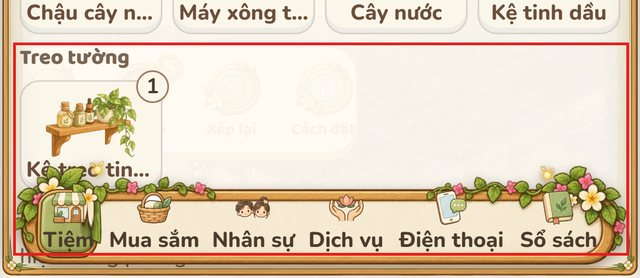
Kho đồ: hàng "Treo tường" (Kệ tinh dầu…) bị thanh nav che mất một nửa.
Màn: bay tri · dọc
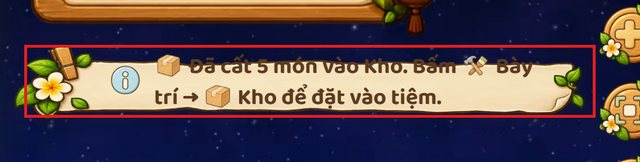
Băng hướng dẫn ở Tiệm: dây leo/hoa đè lên dòng chữ đầu "Đã cất 5 món vào Kho…", chữ lòi lên mép trên khung.
Màn: ve tiem · dọc
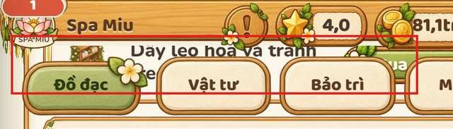
Mua sắm: hàng chip tab (Đồ đạc/Vật tư…) trong suốt nên chữ nội dung ("Dây leo hoa và tranh") chui ra phía sau, bị cắt đôi.
Màn: bam chip can mua · dọc
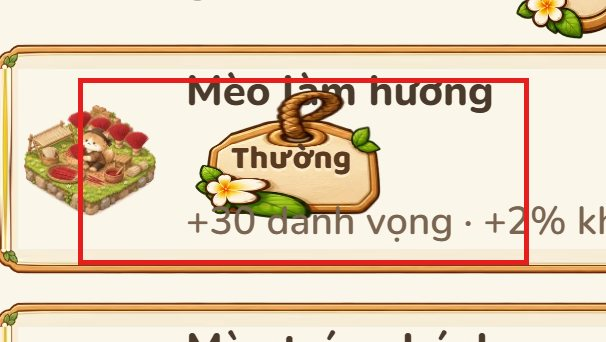
Tab Mèo: huy hiệu "Thường/Hiếm" đè lên tên mèo ("Mèo làm hương" mất chữ) và dòng mô tả.
Màn: mua meo · dọc
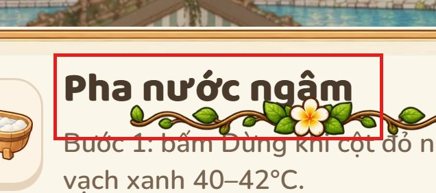
Tiêu đề popup mini game ("Pha nước ngầm") bị đường dây leo gạch ngang qua chữ. Lặp lại ở mọi tiêu đề popup (Kho đồ, Bàn pha chế…).
Màn: soak 1 choi · dọc
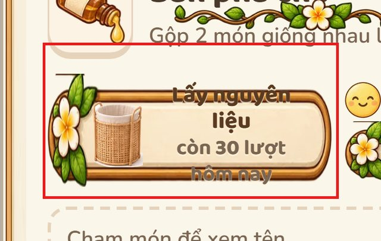
Bàn pha chế: nút "Lấy nguyên liệu còn 30 lượt hôm nay" chữ tràn ra ngoài nút, dòng cuối bị cắt.
Màn: merge 1 choi · dọc
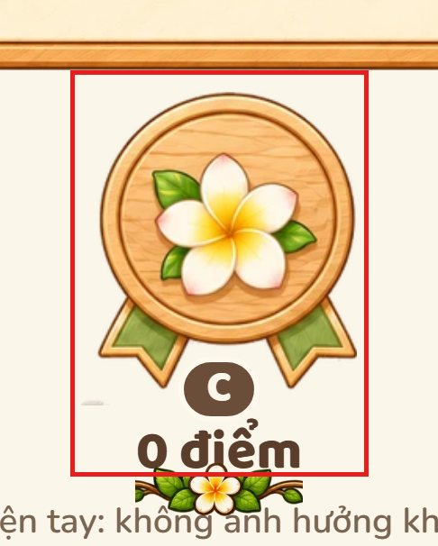
Kết quả Bấm huyệt: chữ "0 điểm" bị huy hiệu hoa đè một nửa; khung điểm phía trên để trống hoàn toàn.
Màn: rub 3 sau · dọc
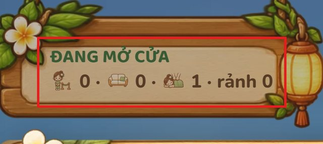
Bảng "ĐANG MỞ CỬA": chữ xanh nhạt trên nền gỗ vàng gần như không đọc được; dòng số liệu "0 · 0 · 1 · rảnh 0" nhỏ và mờ.
Màn: so tay · dọc
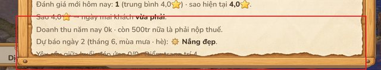
Ngang: sheet "Đóng cửa ngày 1" cao hơn màn hình, dòng cuối ("Yêu cầu…") bị cắt ở đáy, không thấy nút bên dưới.
Màn: het ngay · ngang
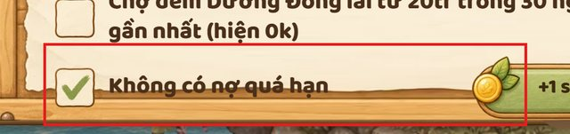
Ngang: Sổ tay bị khung gỗ cắt hàng cuối "Không có nợ quá hạn" (chữ và nút +1 sen chồng lên viền).
Màn: so tay · ngang
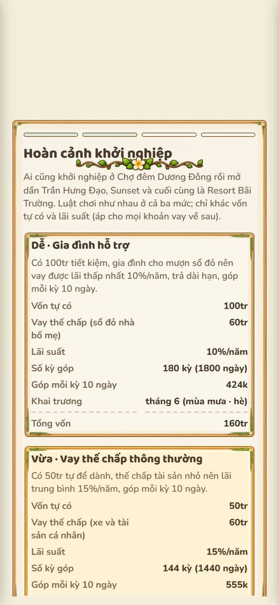
Đường dây leo trang trí đè lên tiêu đề popup ("Hoàn cảnh khởi nghiệp", "Khai trương tiệm", "Đóng cửa ngày N"), có chỗ đè cả đoạn văn.
Màn: lỗi 24m #6 · dọc
Mua sắm: dãy chip tab dính trên, nền trong suốt, nội dung cuộn chui qua sau chip.
Màn: lỗi 24m #7 · dọc
Ô tiền bị icon xu đè mất chữ số đầu: "105,5tr" hiện "05,5tr", "76,6tr" hiện "6,6tr".
Màn: lỗi 24m #8 · dọc + ngang
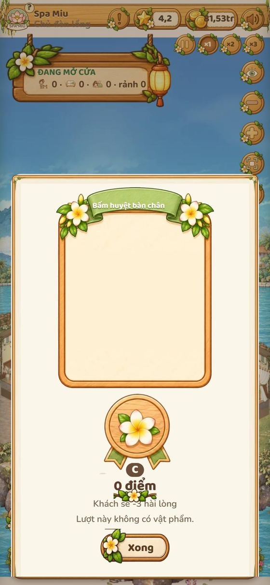
Kết quả mini game Bấm huyệt: khung điểm để trống, "0 điểm" đè lên huy hiệu, dòng "Khách sẽ -3 hài lòng" bị cắt.
Màn: lỗi 24m #11 · dọc + ngang
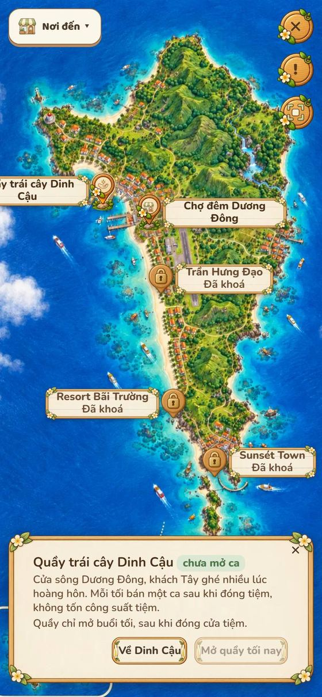
Bản đồ: nhãn ghim "Quầy trái cây Dinh Cậu" bị cắt ở mép trái; nút "Mở quầy tối nay" xám mà không giải thích vì sao.
Màn: lỗi 24m #13 · dọc
Thanh trên: danh hiệu "Chủ đèn lồng" hiện mờ ngay dưới tên spa, bị cắt nửa, chồng lên mép thanh.
Màn: lỗi 24m #15 · dọc + ngang
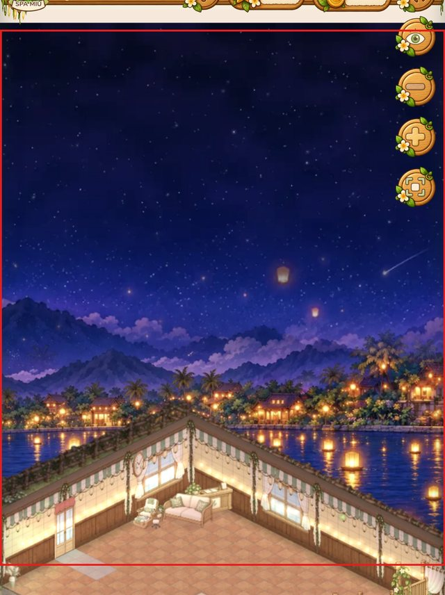
Bố cục phòng: gần nửa màn hình là trời đêm trống, phòng nhỏ ở nửa dưới, đồ đạc tí hon dồn vào một góc tường, sàn rộng bỏ trống.
Màn: xong bay tri · dọc
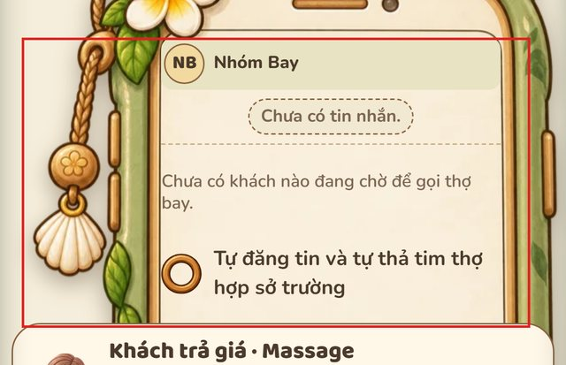
Điện thoại: chữ "Chưa có khách nào đang chờ…" tràn ra ngoài màn hình điện thoại, đè lên viền; khung điện thoại tai mèo khác hẳn các khung còn lại.
Màn: tab dt · dọc
Phòng đặt quá thấp: 45% màn hình là trời trống, cạnh trái bị cắt ở x=0; Kho/Bày trí che gần hết phòng.
Màn: lỗi 24m #3 · dọc
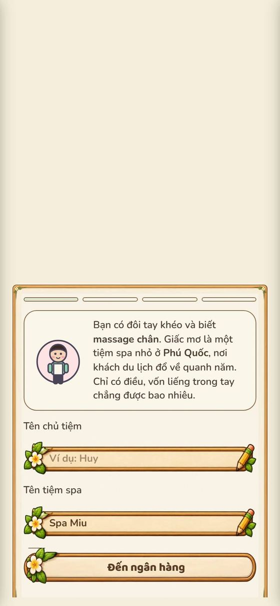
Các màn đứng chuyện (tên chủ tiệm, ngân hàng, hợp đồng): nửa trên là nền kem trống trơn, không có cảnh.
Màn: lỗi 24m #5 · dọc
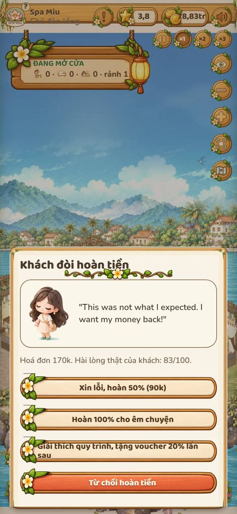
Popup "Khách đòi hoàn tiền": lời khách bằng TIẾNG ANH giữa game tiếng Việt; nút dài ("Giải thích quy trình, tặng voucher…") bị cắt ở mép.
Màn: lỗi 24m #10 · dọc
Popup "Khách trả giá" chiếm nửa dưới màn hình và dính lại khi đổi tab (Nhân sự, Dịch vụ, Điện thoại, Sổ sách): nội dung tab bị cắt cụt.
Màn: tab dv · dọc
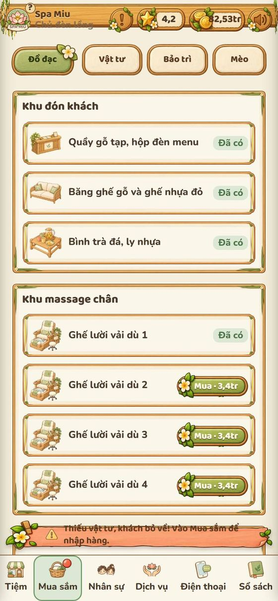
Hết vật tư thì khách không tới nữa, mở cửa 0 khách mà người mới không biết vì sao; chỉ có một toast đỏ bị chữ che.
Màn: lỗi 24m #1 · dọc, ngày 3
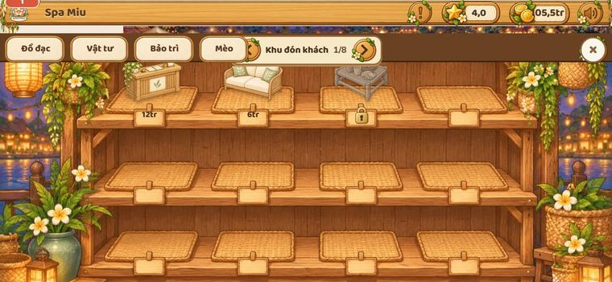
Mua sắm ngang là kệ gỗ 8 trang: quầy thu ngân ở trang 1, ghế massage ở trang 2; chip "Cần mua" không nhảy trang, nav bị ẩn.
Màn: lỗi 24m #2 · ngang
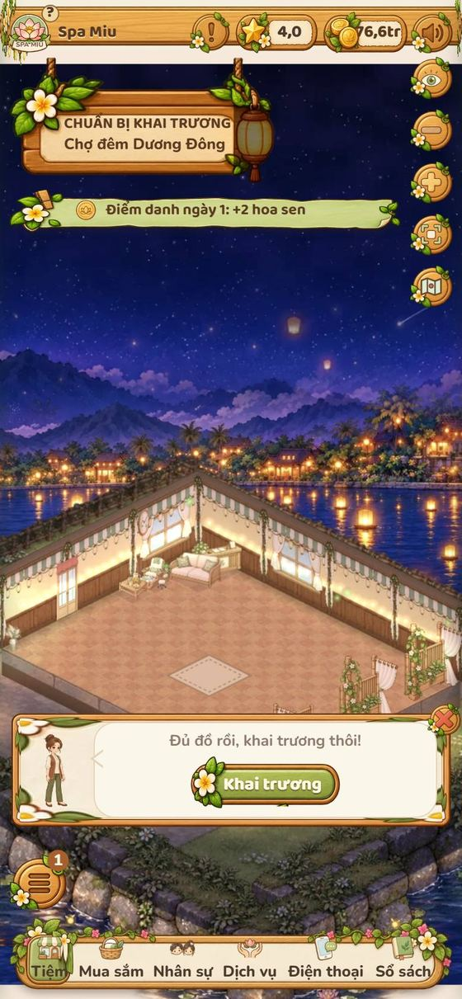
Đồ tự đặt dồn hết vào góc trong cùng, chồng lên nhau, phòng rộng, hình nhỏ li ti.
Màn: lỗi 24m #4 · dọc
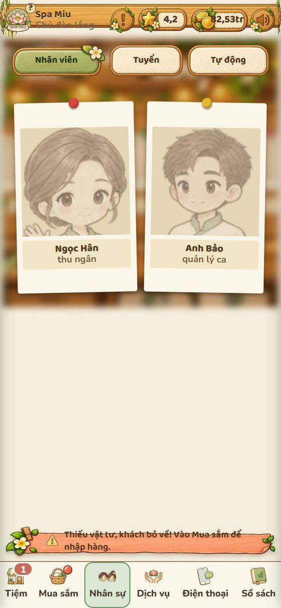
Tab Nhân sự: nửa dưới màn hình trống, chỉ có 2 thẻ nhân viên ở nửa trên trên nền gỗ mờ, cảm giác chưa tải xong.
Màn: lỗi 24m #9 · dọc
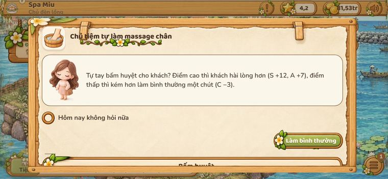
Popup "Chủ tiệm tự làm massage chân" cao hơn màn hình, nút chính "Bấm huyệt" bị cắt gần hết, phải cuộn mới thấy.
Màn: lỗi 24m #12 · ngang
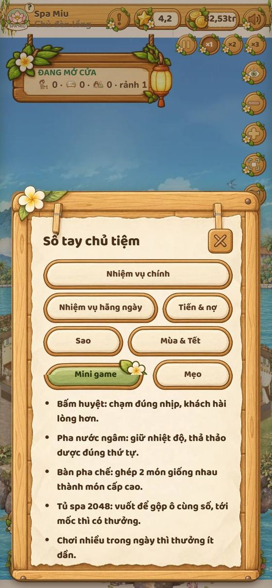
Sổ tay chủ tiệm: đổi tab thì khung nhảy vị trí/chiều cao; tab "Nhiệm vụ hằng ngày" bị bông hoa che chữ.
Màn: lỗi 24m #14 · dọc
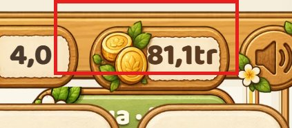
Hình bị kéo méo tỉ lệ: 9-slice out/ui3-nut-chu-xanh.webp gốc 360x133 slice 0 40 0 100 cao 36: gốc keo x0.25 ngang / x0.27 dọc (lech 8%)
Màn: mua cuon2 · dọc · ×5 màn
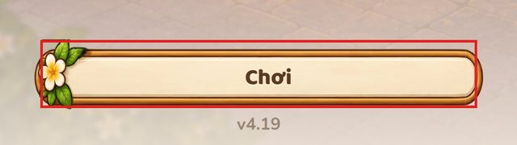
Hình bị kéo méo tỉ lệ: 9-slice out/ui3-nut-chu-kem.webp gốc 360x116 slice 0 40 0 100 cao 44: gốc keo x0.27 ngang / x0.38 dọc (lech 28%)
Màn: splash · dọc + ngang · ×4 màn
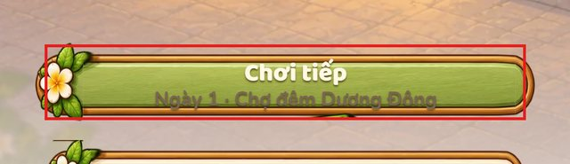
Hình bị kéo méo tỉ lệ: 9-slice out/ui3-nut-chu-xanh.webp gốc 360x133 slice 0 40 0 100 cao 44: gốc keo x0.27 ngang / x0.33 dọc (lech 17%)
Màn: mo lai · dọc + ngang · ×2 màn
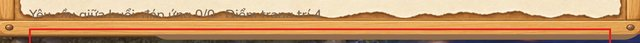
Hình bị kéo méo tỉ lệ: 9-slice out/ui3-nut-chu-kem.webp gốc 360x116 slice 0 40 0 95 cao 50: gốc keo x0.36 ngang / x0.43 dọc (lech 16%)
Màn: het ngay · ngang · ×2 màn
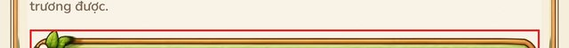
Hình bị kéo méo tỉ lệ: 9-slice out/ui3-nut-chu-xanh.webp gốc 360x133 slice 0 40 0 100 cao 50: gốc keo x0.31 ngang / x0.38 dọc (lech 17%)
Màn: thue · ngang
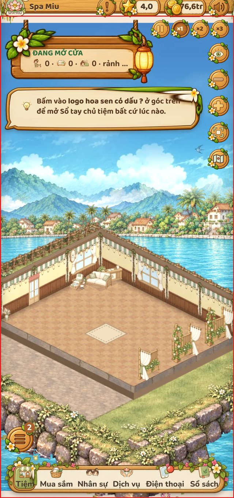
Ảnh bị phóng quá mức nên nhòe trên iPhone (DPR 3): canvas 585x1203 hiển thị 390x802 (phóng 2.00x)
Màn: m0 · dọc · ×143 màn
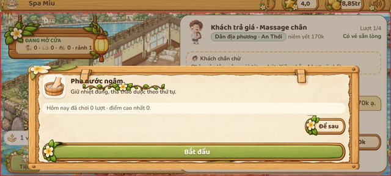
Ảnh bị phóng quá mức nên nhòe trên iPhone (DPR 3): canvas 1266x531 hiển thị 844x354 (phóng 2.00x)
Màn: soak 0 mo · ngang · ×45 màn
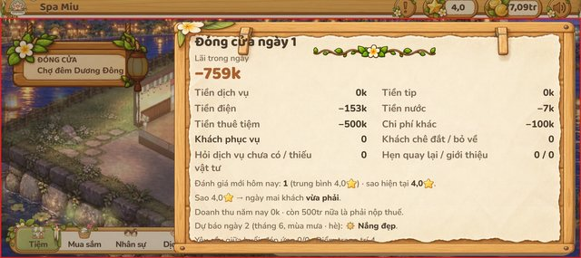
Ảnh bị phóng quá mức nên nhòe trên iPhone (DPR 3): canvas 1266x527 hiển thị 844x351 (phóng 2.00x)
Màn: het ngay · ngang · ×8 màn
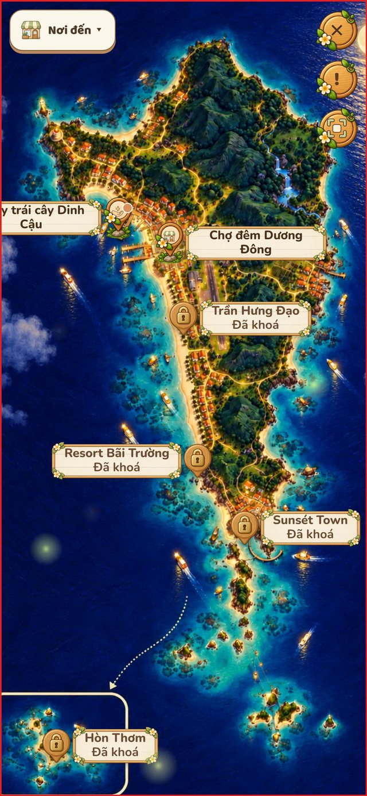
Ảnh bị phóng quá mức nên nhòe trên iPhone (DPR 3): canvas 390x844 hiển thị 390x844 (phóng 3.00x)
Màn: ban do · dọc · ×4 màn
Ảnh bị phóng quá mức nên nhòe trên iPhone (DPR 3): bg out/mg27-bamhuyet.webp gốc 1400x788 cần ≥ 2709x1525 (phóng 1.93x)
Màn: rub 1 choi · ngang · ×3 màn
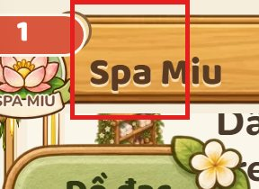
Ảnh bị phóng quá mức nên nhòe trên iPhone (DPR 3): img out/cd-p-bang.webp gốc 87x73 cần ≥ 132x132 (phóng 1.52x)
Màn: mua cuon3 · dọc · ×2 màn
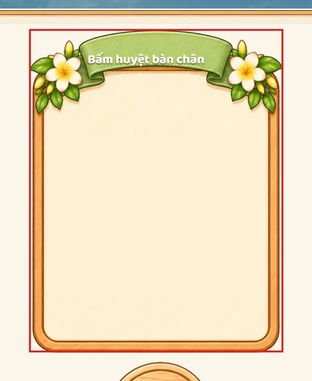
Ảnh bị phóng quá mức nên nhòe trên iPhone (DPR 3): img out/mg-kq-khung.webp gốc 503x640 cần ≥ 684x870 (phóng 1.36x)
Màn: rub 3 sau · dọc · ×2 màn
Ảnh bị phóng quá mức nên nhòe trên iPhone (DPR 3): bg data:image/webp;~172455 gốc 860x1290 cần ≥ 1688x2532 (phóng 1.96x)
Màn: mo lai · dọc · ×2 màn
Ảnh bị phóng quá mức nên nhòe trên iPhone (DPR 3): bg data:image/webp;~174543 gốc 1280x853 cần ≥ 2532x1688 (phóng 1.98x)
Màn: mo lai · ngang · ×2 màn
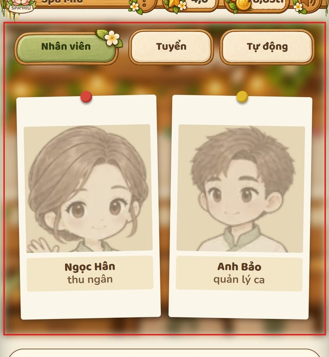
Ảnh bị phóng quá mức nên nhòe trên iPhone (DPR 3): bg out/mg26-nhansu.webp gốc 1400x788 cần ≥ 1985x1117 (phóng 1.42x)
Màn: tab nv · dọc
Tab Nhân sự: nền gỗ bị làm mờ (blur) trông như chưa tải xong; hai chân dung nhạt màu, kém nét.
Màn: tab nv · dọc
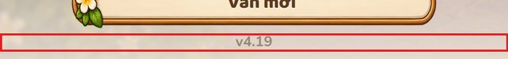
Chữ nhỏ hơn 12px, khó đọc: "v4.19" 11px
Màn: mo lai · dọc + ngang · ×4 màn
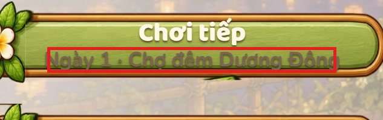
Chữ nhỏ hơn 12px, khó đọc: "Ngày 1 · Chợ đêm Dương Đông" 11px
Màn: mo lai · dọc + ngang · ×2 màn
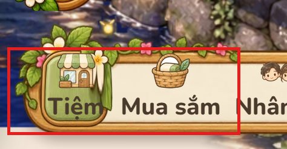
Thanh nav dưới: lá + nhà đè lên chữ "Tiệm" (tab đang chọn), các chữ nav khít sát nhau.
Màn: ve tiem · dọc
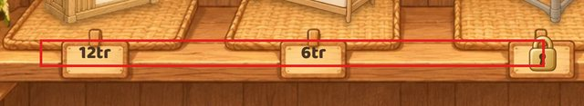
Ngang: nhãn giá trên kệ gỗ ("12tr", "6tr") chữ cỡ ~9px, quá nhỏ.
Màn: mua do · ngang
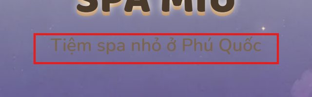
Splash: dòng phụ "Tiệm spa nhỏ ở Phú Quốc" tím nhạt trên nền tím, gần như biến mất.
Màn: splash · dọc
Thanh nav dưới: tab đang chọn ("Tiệm") có biểu tượng đè lên chữ; chấm đỏ trên tab Mua sắm không rõ nghĩa.
Màn: lỗi 24m #16 · dọc
Banner hướng dẫn ở Tiệm: dòng "Bấm [Bày trí] → [Kho] để đặt vào tiệm" tràn dòng, icon xen chữ, khó đọc trên nền tối.
Màn: lỗi 24m #18 · dọc
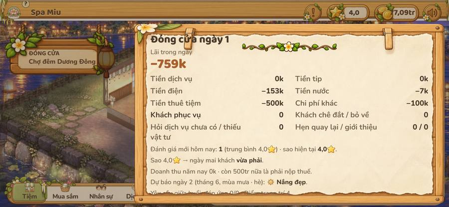
Tổng kết cuối ngày dài 4 màn hình, chữ nhỏ dày đặc, nút "Mở cửa ngày N" nằm tận đáy, hàng trên cùng bị cắt khi cuộn.
Màn: lỗi 24m #20 · dọc
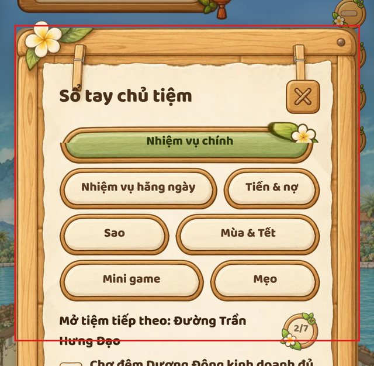
Sổ tay dùng khung gỗ + giấy sần, trong khi các sheet khác là khung kem có dây leo: hai kiểu popup khác nhau trong cùng game.
Màn: so tay · dọc
Hộp trả giá khách: chữ Giá/giữ 170k và các nút không cùng rộng, nút nhỏ lệch; không xem lại được lượt trước.
Màn: lỗi 24m #21 · dọc
Menu tiệm (4 nút tròn) khi vào Bày trí: nút camera (mắt/+/−/khung) nhảy xuống giữa màn, khác vị trí lúc bình thường.
Màn: lỗi 24m #22 · dọc
Nút "Về Dinh Cậu"/"Quay lại" trong sheet lệch kích thước với nút chính (hai cỡ nút trong cùng hàng).
Màn: lỗi 24m #23 · dọc
Cảnh đóng cửa ngang: phòng nhỏ ở góc trái, 60% màn hình là đá/nước trống.
Màn: lỗi 24m #24 · ngang
Đồ mua sắm đổi tên giữa các màn: "Ghế lười vải dù" (sau ngày 3) khác "Ghế massage chân" lúc khai trương; người chơi tưởng mất đồ.
Màn: lỗi 24m #17 · dọc
Bày trí xong, nút "Khai trương" nằm trong khung "Cần mua" cũ: khung đổi tiêu đề nhưng vẫn màu cũ, không rõ đã hết việc.
Màn: lỗi 24m #19 · dọc